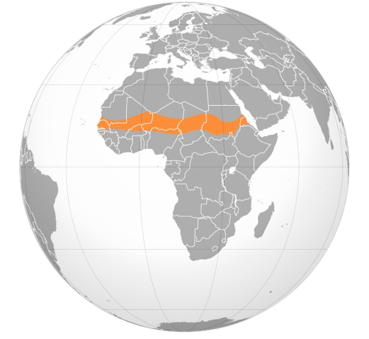
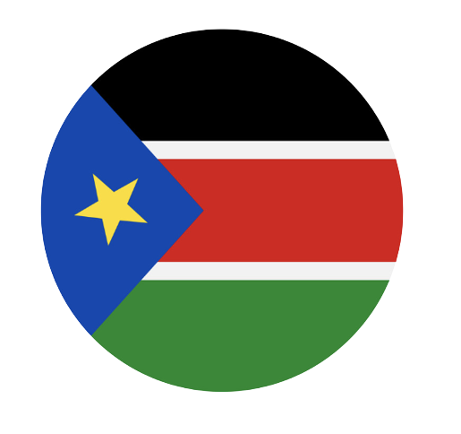
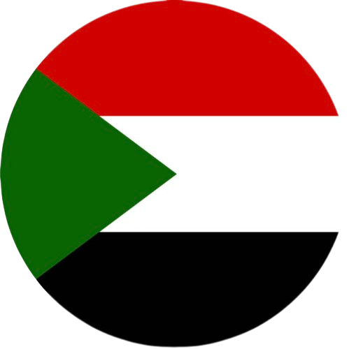

#1 Democratic Republic of Congo (DRC)
~26 million people facing hunger
Reason of hunger: Conflict and displacement
#2 Afghanistan
~19.9 million people facing hunger
Reason of hunger: Four decades of conflict

#3 Yemen
~17 million people facing hunger
Reason of hunger: Civil War
#4 Syria
~12 million people facing hunger
Reason of hunger: Civil War

#5 The Sahel
~13 million people facing hunger (projection)
Reason of hunger: Armed conflict and climate extremes

#6 South Sudan
~7.7 million people facing hunger

#7 Sudan
~15.8 million people facing hunger
Reason of hunger: Civil War
#8 Somalia
~6 million people facing hunger
Reason of hunger: Drought, civil war and rising food prices
#9 Northern Ethiopia
~26 million people facing hunger
Reason of hunger: Armed conflict